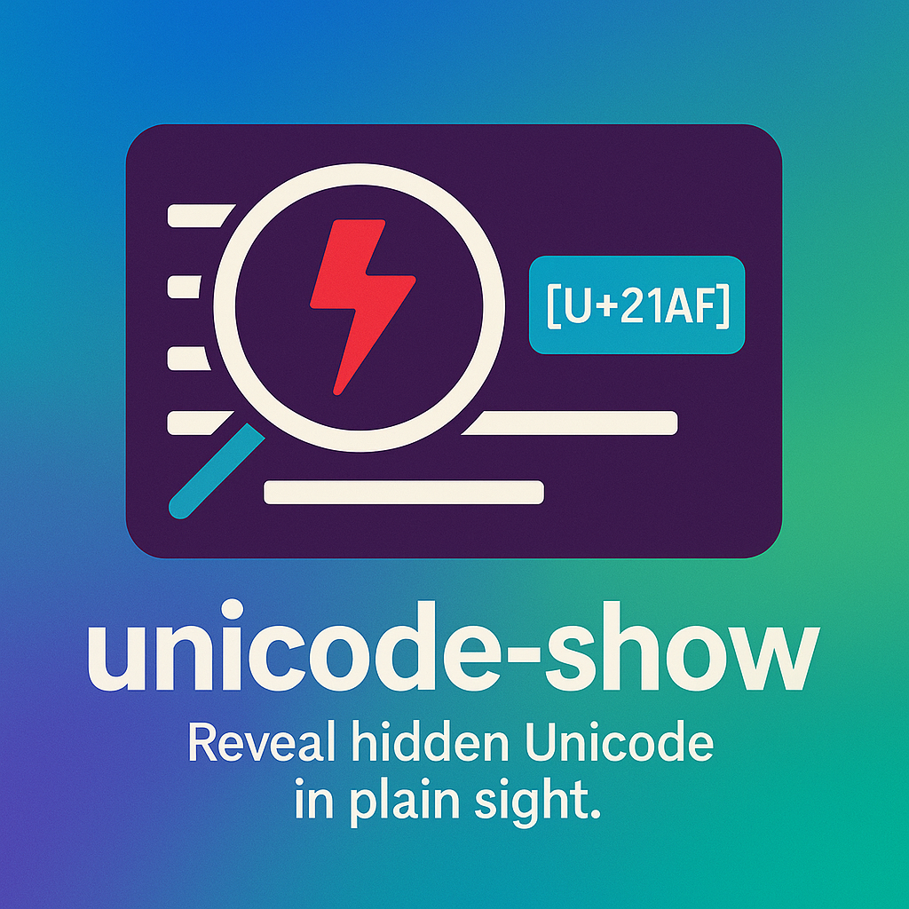

We believe security software like Kicksecure needs to remain Open Source and independent. Would you help sustain and grow the project? Learn more about our 14 year success story and maybe DONATE!
UnicodeDocumentationStdisplayPrevious page: UnicodeIndex page: DocumentationNext page: Stdisplayunicode-show

Detect and annotate non-ASCII or suspicious Unicode characters in text or files.
SYNOPSIS
unicode-show [FILE]...
DESCRIPTION
unicode-show is a utility that reads text input (from
standard input or files) and highlights suspicious Unicode characters,
such as those outside the safe ASCII range. This tool is useful for
identifying potentially malicious or misleading Unicode characters in
source code, logs, or user input.
For each suspicious character, unicode-show
prints:
- The line it appears on, annotated with
[U+XXXX]markers - A description including the character (if visible), Unicode codepoint, character name, and category
What is considered suspicious:
- Characters outside the printable ASCII range
(
0x20-0x7E) - Control characters (excluding
\n,\r,\t) - Any character not in the standard set of ASCII letters, digits, punctuation
- trailing whitespace
- missing newline at the end of the file
Output formatting:
- Annotations are colorized using ANSI escape codes if stdout is a terminal and the environment is color-friendly
- Red for inline
[U+XXXX]markers - Cyan for character metadata descriptions
COLOR OUTPUT DISABLED IF
- The environment variable
NOCOLORis set TERMis set todumb- Output is redirected (non-interactive terminal)
OPTIONS
This tool takes no options. Any arguments are treated as file paths. If no arguments are given, input is read from standard input.
EXIT STATUS
0No suspicious Unicode characters found1Suspicious characters were detected2An error occurred (e.g., file I/O or decoding failure)
EXAMPLES
Scan a file for suspicious characters:
unicode-show suspicious.txt
Scan multiple files:
unicode-show file1.txt file2.md
Scan input from a pipeline:
cat file1.txt | unicode-show
Disable color output:
NOCOLOR=1 unicode-show example.txt
ENVIRONMENT
NOCOLOR- disables color output if setTERM- if set todumb, disables color output
SAMPLE OUTPUT
unicode-show trojan-source/Python/early-return.py
trojan-source/Python/early-return.py:5: ''' Subtract funds from bank account then [U+2067]''' ;return
-> '\u2067' (U+2067, RIGHT-TO-LEFT ISOLATE, Cf)
trojan-source/Python/early-return.py:11: [missing newline at end]Kicksecure only if using Zsh:
zsh: exit 1 unicode-show trojan-source/Python/early-return.pySource Code
Categories: Documentation